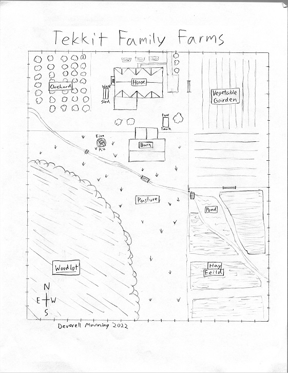

Easter is soon, and that means children all around America will be having the time of their lives fighting over sugary treats. It's sad that this is what some people think, missing the true meaning of easter entirly. But Easter egg hunts are intresting for another reason; Running one as a social expiriment might give us some nice insight on humanity.
An Easter Egg Hunt is a basic situation involving young children finding plastic eggs hidden all around a area. It is easy to set up: You just need a group of little children, many plastic easter eggs, and a large open space to hide them. To encourage the kids, put some candies or chocolates in the eggs. Then send them out with baskets to fulfill their sugar needs. Some may wish to use real eggs, but at this point, very few children will be motivated by a chicken egg. It's sad, I know.
So you have young children running around finding eggs (And chocolate). You could stop here, but wait! What if you make it more like a game. Let's say that if a child loses all of his eggs, he is out. Also, once the last egg is found, the hunt is over and prizes for the kids with the most eggs are awarded. If a child gives up before the end, his prizes are void. Now lets put it on a farm, the Tekkit Family Farm. This farm is a much more intresting enviroment, with a wood lot, barn, garden, and orchard. Lets do a little thought expiriment.

Map of Tekkit Family Farms
We have 100 children on Tekkit Family Farm. They are aloud everywhere, except in the house. Now, there are 5000 eggs hidden; so thats 50 eggs per child. We have unlimited time, and very motivated children. (Childeren like candy!) Now, lets see what happens.
Stage One: The Candy Rush
At this point, One Hundred children are let free with baskets or bags to find eggs. They quickly dash around, finding all the easy ones; ones hidden in plain sight. The faster children do better, but their is no conflict. Yet...
Stage Two: The Search
The children have found nearly 100 of the eggs now, and they are less evenly distriuted between them. While the Candy Rush floods down the map, it leaves in it's wake many who walk slower, look more carefully, and take their time. In the end, these might do the best. Parts of the farm, like the woodlot, are yet untouched. Intrestingly, at this point children either get cold or bored and go home. Luclily for us, it's nice and warm, and the subjects show no sign of slowing down!
Stage Three: The Conflict Begins
Many of the candy rushers are losing traction. Seeing some of the Searchers with so many eggs makes some of them aggressive, turning to the addictive craft of pickpocketting. Since the Candy Rushers are faster, they basicly run past, grabbin an egg or two before they get noticed. Some of the victemized Searchers and the slower candy rushers try a diffrent tctic. Driven By a need for sugar, they tackel a poor, unwilling child to the ground, spilling their eggs. They grabb as many as they can, and rush away. The Attackers cause a new problem. Some of their victems get disqualified because they don't have any aggs in their basket!
Stage Four: Teams Form
At this point, the risk of being attacked spurs a new development. Some of the Searchers, all good freinds at home, form a soceity in the barn. They will protect eachother, and others who join them, and promise to live a life of non-agression. This, the society of protection, causes the major Attackers to form a group: The Wolves. Like wolves, they hunt in a pack, preying on loners (People without a team) and often, even groups of the Society. Also like wolves, They have a clear leadership heirachy determined by phisical strenght, speed, and the number of eggs they have. They set up camp over in the orchard by the house. Now, nearly 2500 eggs have been found, including all of the easy ones.
Stage Five: Team Stabilization
Now there are about 90 children remaining. They are organized thus:
Teams:
- The Society (of Protection) 25 members 130 eggs Stable
- The Wolves 20 members 200 eggs Increasing
Loners:
- Searchers 29 members 87 eggs Decreasing
- Pickpocketters 16 members 97 eggs Decreasing
The Society has developed a egg protection system. They made a secret "Bank" in the hay loft, where they store their eggs sepratly. If one of their memebers is low, they share their eggs to keep them from being disqualified. As they have taken up residence in the barn, they control the main travel between the yard (and orchard) and the pasture. They get to escort the others through the barn, sometimes at a price. They also have guards set up on the ground and in the hay loft, to protect the eggs.
With the Wolves, tension is high. Some of them keep their eggs hidden in the orchard, but run the risk of another wolf taking them. They split into to "raids" where they roam around, looking for loners, pickpocketters, and sometimes soceity members travelin alone. They are constantly competing with themselves to get more eggs. Dispite this, their ranks are groing.
The Pickpocketters and loners, to some extent, are becomeing losing moral sad that they arn't in a team. Soon this will CHANGE.
Stage Six: Ambushing in the forest
Some of the pickpocketters go to the forest looking for victims, and discover a new tactic: Ambushment.
"“People who boast about their I.Q. are losers.”
― Stephen Hawking "
deverellmanning.github.io Last Updated: 4/26/2022